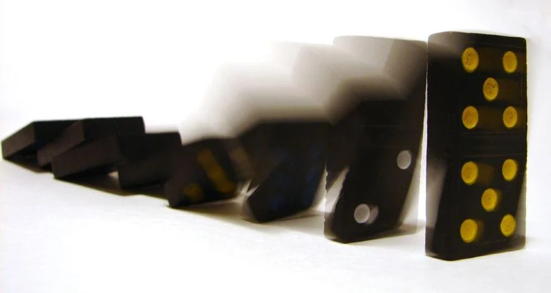

Domino Rally Design Studio
One tile falls and tells the next: design a run with curves, splits and a finale, then earn the single push that sets it off.
Before you begin
- Ages
- 6–9
- Group
- 2–20 kids
- Time
- 30–45 min
- Where
- Indoors
- Prep
- Some prep needed

Setup
Test the tiles before the session: stand ten in a row at one-finger gaps on your actual floor and push the first. If the chain stalls, the gaps shrink; the studio's first engineering fact is that spacing is a measurement, not a guess, and builders will discover their own floor's number. Mark each builder's territory with tape and set the studio law: hands in your own territory, and a fallen run is information, never a disaster. Every builder draws their run on paper first (a line, a curve, one split or climb if they are ambitious) because domino builders work from plans, and the plan is what gets graded when the floor disagrees.
Materials
- a class set of dominoes or uniform blocks (books and wooden cubes work if they stand reliably; test one before promising forty)
- a hard, flat floor space per builder or pair, marked with tape so runs do not grow into each other's territory
- rulers or craft sticks for measuring gaps between tiles
- paper and pencil per builder for the run map: every design gets drawn before it gets built
Steps
- Free building, ten minutes: stand tiles, push, watch, adjust. Builders find their floor's spacing number by experiment and write it on their map (my gaps are one finger, or two centimetres). Numbers found by falling tiles are remembered.
- Teach the two reliability tricks the professionals use: firebreaks (leave a removable tile every so often, so an accident only eats one section) and the test push (topple just the first section before building the rest). Builders add both to their maps.
- Design round: each builder or pair draws a run with one named feature: a curve, a split that falls two ways, a bridge of two books the chain climbs, or a finale (a tile that knocks a ball, rings a bell, or drops a flag). Features must be drawn to be claimed.
- Build to the map. When a section falls early, the builder rebuilds only that section (the firebreaks earn their keep) and notes on the map what changed: tighter gap, straighter line, slower hands.
- The gallery push: builders take turns. One push per run, given by its builder, and the room watches in silence until the last tile falls or stops. A run that stops gets one question from the room, answered from the map: where, and what will you change?
- Finale runs: anyone whose run fell entire may rebuild it joined to a neighbour's run, making the room's first two-builder chain. End the studio with every map filed; a returning studio starts from filed maps, not from memory.
Variations
Easier: Straight lines only, ten tiles, gaps measured with a craft stick laid flat between tiles so spacing is a tool, not a judgement.
Harder: Scoring by reliability: builders predict their run's fall count in writing before the push (all 60, or 45 of 60), then compare. Add a timed element only for builders who ask for it: longest run standing in fifteen minutes.
Safety
Tiles and blocks stay on the floor; nothing is thrown, ever, and a builder who is frustrated steps back to their map rather than sweeping a run. Crawling and kneeling space is part of the territory marking.
Source: Wikipedia, en.wikipedia.org
Why it works
Domino toppling is applied physics a child can see: spacing, friction and energy transfer decide whether the chain lives, and the plan-build-test loop is the engineering cycle at tabletop scale.
Inclusion notes
Builders can work seated at a low table with tiles on a tray rimmed to catch falls; a partner can stand tiles to a builder's map and measurements, with the design and the push belonging to the map's owner.
Tried this? Rate it
Your ratings live in this browser only. Nobody else can see them. There are no community ratings here; every star on this card is yours.
Rate this activity, add a note, or write a reflection
Quick reflection
Optional, saved with your rating, and exported with "Copy my week".
Full activity card,